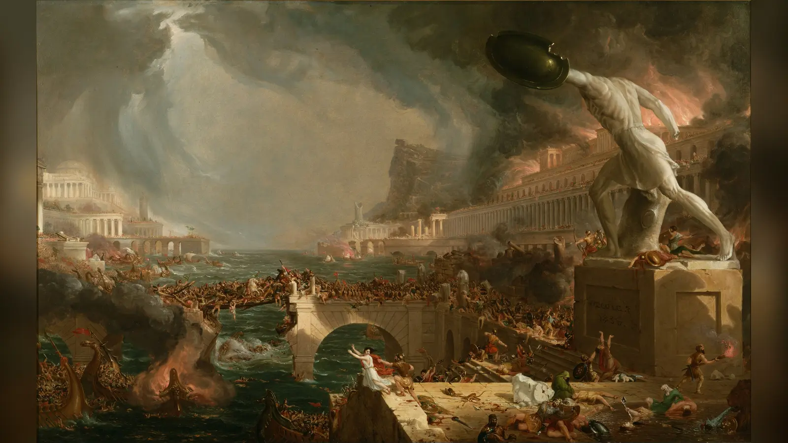

Neron Roma'yı Gerçekten Yaktı mı? Büyük Roma Yangınının Ardındaki Gerçek
Neron Roma’yı gerçekten yaktı mı? MS 64 Büyük Roma Yangını’nın nedeni, keman efsanesi, Domus Aurea ve antik kaynakların sunduğu çelişkili kanıtları keşfedin.
Neron Roma’yı gerçekten yaktı mı? MS 64 Büyük Roma Yangını’nın nedeni, keman efsanesi, Domus Aurea ve antik kaynakların sunduğu çelişkili kanıtları keşfedin.
 Roma Tarihi
Roma TarihiAntik yazarlar Kolezyum'un ilk yıllarında su, gemiler ve sıra dışı gösterilerden söz ediyor. Peki arena gerçekten bir denize çevrildi mi? Antik anlatılar, arkeolojik bulgular ve Roma mühendisliği bu ünlü gösterilerin gerçekte nasıl yapılmış olabileceğini bütün yönleriyle ortaya koyuyor.
 Roma Tarihi
Roma TarihiRoma gladyatörlerinin hayatı yalnızca arenadaki birkaç dakikadan ibaret değildi. Eğitimden beslenmeye, sağlık bakımından özgürlük ihtimaline kadar arenanın arkasındaki gerçek yaşamı keşfedin.
 Roma Tarihi
Roma TarihiÖmür boyu diktatörlük, krallık korkusu, Cumhuriyetçi idealler ve kişisel hesaplar Roma’nın en ünlü suikastında nasıl birleşti?
Dalí’nin yumuşayan saatlerini; zaman, bellek, rüya ve çürüme hakkındaki tartışmalı yorumlarla birlikte inceleyin.
 Antik Mısır
Antik MısırÇocuk firavunun yaşamını, tartışmalı ölümünü, KV62 mezarını ve dünyaya yayılan lanet efsanesini kanıtlarla keşfedin.
 Arkeoloji
ArkeolojiNeolitik devrim anlatısını sorgulatan Göbekli Tepe keşfini ve yapılar hakkındaki güncel arkeolojik tartışmaları inceleyin.
 Sanat Tarihi
Sanat TarihiVan Gogh’un son iki gününü, tarihsel kanıtları ve René Secrétan bağlantılı alternatif ölüm teorisini inceleyin.
 Antik Tarih
Antik TarihHomeros’un destanından Hisarlık kazılarına uzanan Truva Savaşı’nın efsanesini ve tarihsel gerçeklik tartışmasını keşfedin.
 Antik Mısır
Antik MısırTaş blokların taşınmasını, rampa teorilerini, işçi yerleşimlerini ve antik mühendisliğin çözülemeyen ayrıntılarını inceleyin.
 Yunan Mitolojisi
Yunan MitolojisiMedusa’nın erken Yunan kaynaklarından Ovidius’un dönüşüm anlatısına uzanan değişken ve çarpıcı hikâyesini keşfedin.

Roma Tarihiİç savaşlar, vergi kayıpları, ordunun finansman sorunları, göçler ve askerî darbeler Batı Roma’yı nasıl çökertti?